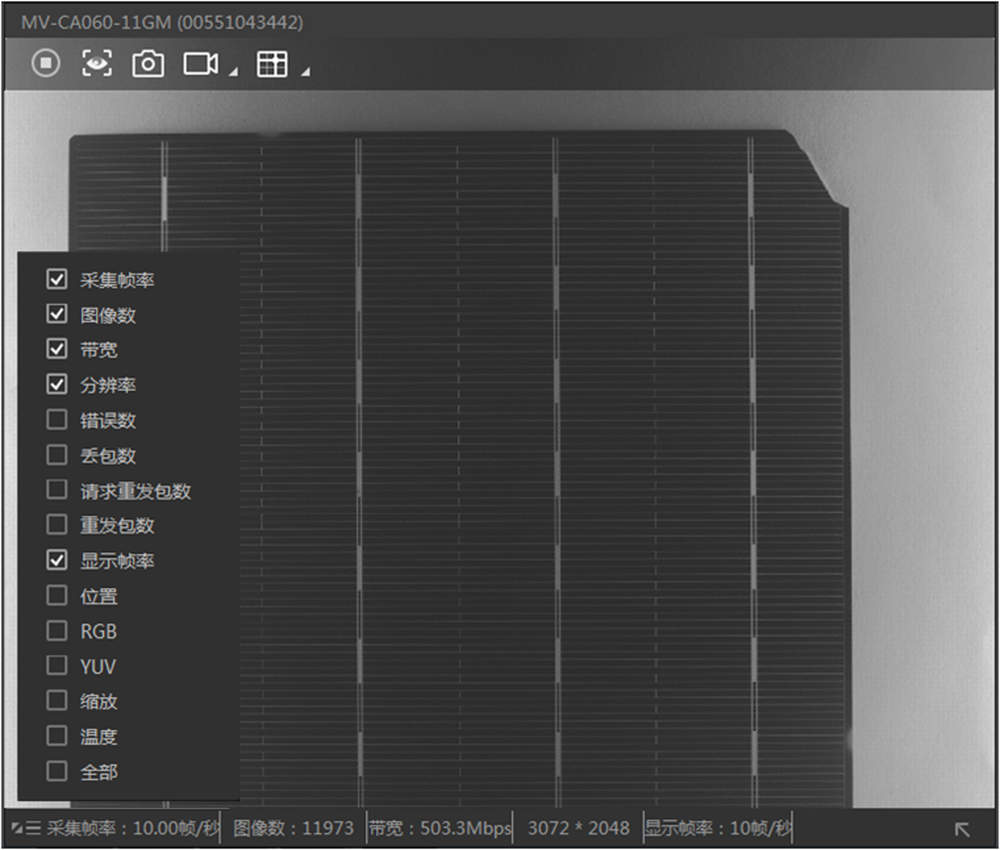
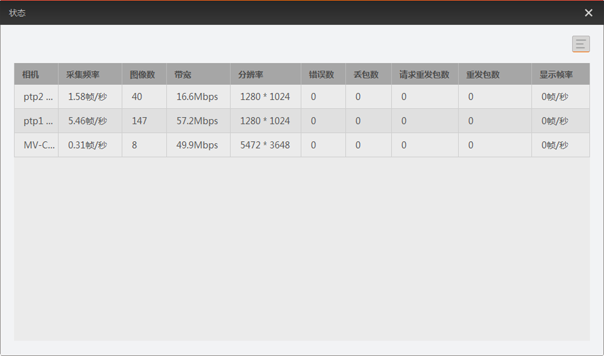

查看取流状态
相机预览过程中可以查看相机的取流状态。单相机和多相机的去留状态查看方式有所不同。
查看单相机取流状态
客户端开启单画面预览时，可通过预览窗口下方的状态栏查看相机的实时参数，如下图所示。实时显示的参数可以通过点击预览窗口左下角的进行设置。

图 1 查看单相机状态
实时参数主要有采集帧率、行频、图像数、带宽、分辨率、错误数、丢包数、显示帧率、位置、RGB、YUV、缩放、温度等。不同类型相机的默认显示的实时参数有所差别。
-
面阵相机：默认显示采集帧率、图像数、带宽、分辨率、显示帧率。
-
线阵相机：默认显示采集帧率、行频、图像数、带宽、分辨率、显示帧率。
查看多相机取流状态
客户端开启多画面预览时，可通过点击控制工具条的进入状态工具。
状态工具可以对已连接的相机状态进行实时检测，如下图所示。
-
对于连接但不采集的相机，状态区显示相机型号信息，实时状态信息为空白。
-
对于正在采集中的相机，状态区会显示相机的型号信息以及实时状态信息。

图 2 查看多相机状态
状态工具的显示项可通过工具右上角的 进行设置。勾选的状态信息在状态工具中显示，不勾选的状态信息在状态工具中不显示。
进行设置。勾选的状态信息在状态工具中显示，不勾选的状态信息在状态工具中不显示。